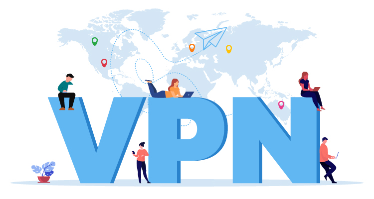
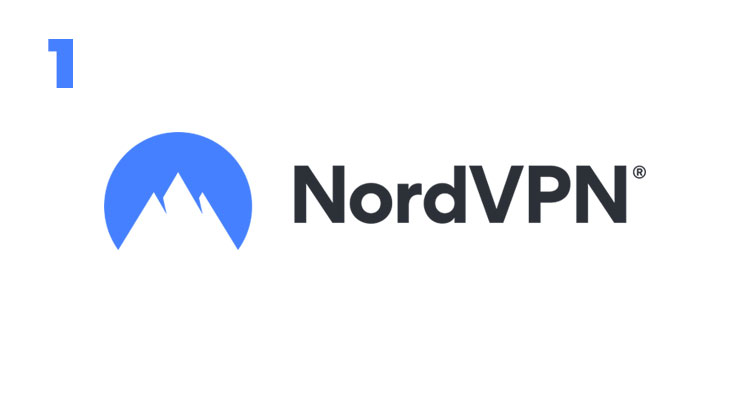
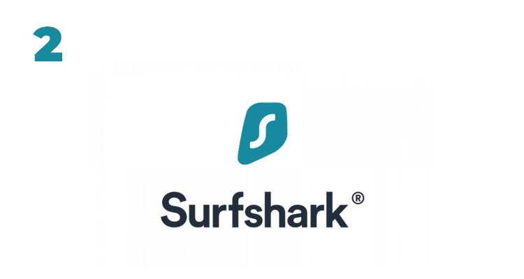
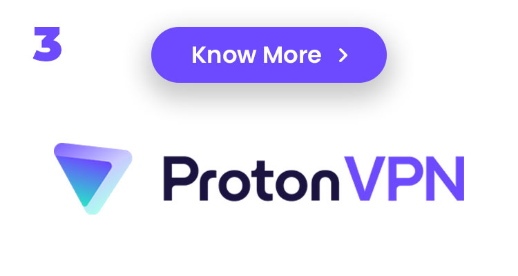
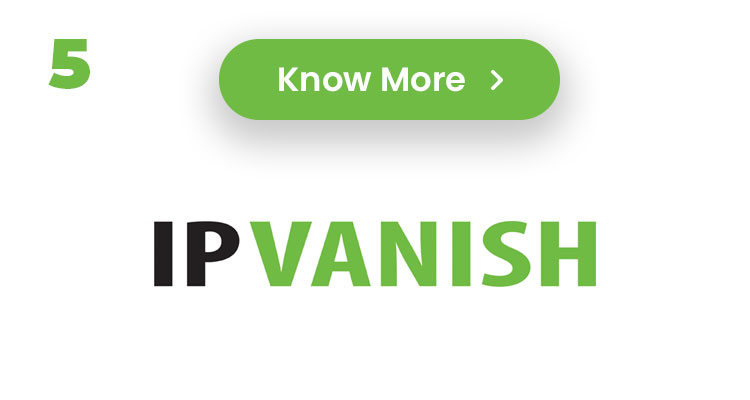

Online privacy and security is becoming increasingly important due to digital theft and hacking, this is why using a VPN is one of the best and secure thing to do when surfing online. That is why seasoned cyber security experts with years of experience were contacted to carefully test and rate the best VPN services to use in 2023, here are the list below
A virtual private network, or VPN, is a service that encrypts your online activities and hides your identity while you browse. VPNs add an extra degree of anonymity, let you access websites in other countries, and can offer safe connections for sending critical data. There are several purposes for VPNs in both personal and professional settings, and there are many different products on the market.To help you pick the finest VPN service for your requirements, we've examined the essential aspects you should take into account.
Virtual private networks, or VPNs, hide your online activities from prying eyes by encrypting your data. A VPN can help you stay anonymous when you do things like check your email, speak with coworkers, and surf the web.
The top VPNs offer high levels of privacy protection without sacrificing speed. We strongly advise utilizing a solid VPN for work, especially if your job requires managing sensitive information, even if some people choose to forgo using one in favor of other kinds of network connections.
Although though they pose a far lower security risk than they did in the past, a VPN can provide you an additional layer of protection when using public Wi-Fi networks. Also, a VPN service enables you to get around content restrictions in some nations so that you can access important news and instructional materials as well as expand your streaming entertainment options. Also, VPNs may be utilized to fix incorrectly implemented league blackouts and regional limitation errors if you enjoy watching live sports.
Let's take a closer look at each of our VPN providers listed below. Expect this list to alter throughout the year as we put each VPN through its paces as we continually update it based on our active testing of VPNs and our examination of the most recent research.For instance, we recently retested our top options for connection speed, and after we have completed analyzing the results, we will update our evaluations.We've compiled a list of our top picks for 2023 so far.
In our most recent testing, we found a few glitches in Nord's killswitch while using its iOS app, which torrenters could find troublesome. On its website, Nord does, however, provide a sideloaded iOS that it suggests consumers use. In our most recent speed testing, NordVPN's performance improved from average speed scores of 2021 and soared back into the list of the fastest VPNs we've tested, with just a 13% loss in base internet speeds.
One of the most well-known names in the VPN industry is NordVPN. In contrast to practically all other providers, it provides six simultaneous connections across its network, which is a generous simultaneous connection count. For those seeking a stronger VPN connection, NordVPN additionally provides a dedicated IP option and the option to connect over Tor. The majority of Nord's 5,000+ servers are set up for peer-to-peer sharing, however the company has restricted torrenting in 14 nations.
PayPal is not accepted by NordVPN, however you may subscribe with any significant credit or debit card, AmazonPay, Google Pay, or ACH transfer. You may use a number of cryptocurrencies, such as Bitcoin, Ethereum, Tether, and Dogecoin, to make an anonymous payment. However, NordVPN has collaborated with a few physical retailers, like Staples, BestBuy, and Walmart, where you can even pay cash for your VPN.
Some of the more significant Surfshark features include split-tunneling, NoBorders mode, camouflage mode (which masks the fact that you're using a VPN), and multihop VPN connections. These capabilities are in addition to traditional VPN features like a kill switch and DNS leak prevention. Also, you'll have access to Surfshark's CleanWeb technology, which guards against phishing scams and prevents advertisements and viruses.
The Nexus network, which joins the VPN's whole network of servers and lets you select different servers to route your connection via, is one advancement we're eager to see Surfshark provide over the course of the upcoming year. Although Tor's functionality is fairly comparable, Surfshark claims to be quicker. The Nexus network may provide you with a few more levels of security when you use the VPN thanks to its Dynamic MultiHop, IP Randomizer, and IP Rotator functionalities. This can be very useful for users with important privacy requirements.
Surfshark has a robust set of privacy and security protections, a vast global network, limitless simultaneous connections, and an intuitive user interface. Yet it's still far less expensive than the majority of its rivals. Surfshark received CNET's Editors' Choice for Best Value VPN in 2022 as a result of this.
According to Surfshark, no user activity is logged. Despite the fact that it is nearly difficult to show with absolute confidence that no data is logged, German cybersecurity company Cure53 rated Surfshark's security as "solid" in its 2021 VPN security audit. In January, Surfshark passed its initial independent no-logs assessment.
Tesonet, the parent company of both Surfshark and NordVPN since February 2022, is required by law, according to Surfshark, to refrain from sharing any information that would violate either company's terms of service or privacy policy. No wording that would suggest Surfshark has any responsibility to share user information with its parent firm or any of its siblings, which includes NordVPN, could be found in either document.
One of the fastest VPNs on the market is routinely rated as Surfshark. Hence, we were taken aback when one of the few problems we encountered with Surfshark occurred during our speed test. With a 19% reduction in internet speed, it remains one of the fastest VPNs we've tested, but we were dissatisfied with the variable performance results we received in some areas.
In our tests, Surfshark was able to unblock Netflix and Amazon Prime Video material without any issues, although we experienced some difficulty using Disney Plus. We tried many servers in the US and other countries where Disney Plus is accessible before connecting to a server in Boston, where we were able to view the material. To use Surfshark to access Disney Plus material, you might need to test a few servers first.
Initiation fees at Surfshark are lower but increase after the first billing cycle. Still, Surfshark keeps its costs cheaper than the majority of other VPNs, which helped it win CNET's Editors' Choice for Best Value.
Although Proton VPN hasn't been around as long as some of its competitors, like as ExpressVPN and NordVPN, it has built a solid reputation for security and openness in only a few short years. A large portion of that reputation was created thanks to Proton Mail's existing strong track record as a secure email service, but since its 2017 introduction, Proton VPN has developed into a reliable product on its own merits.
Proton VPN is the only provider in our top five whose software's source code is openly available for anybody to examine, and all of its apps across platforms are totally open-source. Third-party cybersecurity experts who regularly analyze the applications confirmed that "no serious security concerns were detected" in their most recent evaluation.
Proton VPN is a good option for VPN power users and anybody with a serious need for security, but it's also great for casual VPN users who only want to increase their online privacy or view stuff that's blocked in their area. It can unblock streaming services like Netflix, Disney Plus, HBO Max, and Amazon Prime Video and is quick and simple to use across all platforms.
A kill switch, DNS leak prevention, and AES 256-bit encryption are just a few of the usual security features that Proton VPN has to offer. Also, the service provider includes extra security safeguards including an ad/malware blocker, Tor over VPN, and a stealth protocol to assist in hiding your VPN connection and getting through firewalls.
Moreover, Proton VPN is the only free VPN we've seen that's actually worthwhile to use, with an unlimited free tier that is genuinely outstanding. Proton VPN's free tier is safe and doesn't impose restrictions on speed, bandwidth, or use time like most other free VPNs do, albeit it lacks torrenting compatibility and doesn't have all the bells and whistles of the commercial tiers. Free users can connect one device at a time and have access to servers in the US, Netherlands, and Japan.
The fleet of Secure Core servers at Proton VPN, however, is the security suite's crowning achievement. Proton's Secure Core servers are fully owned by the company, equipped with hard disk encryption, and located in secure data centers in an abandoned military base in Iceland, as well as in underground bunkers in Switzerland and Sweden. In essence, these servers function in the same way as other VPN providers' multi-hop functionality does. When leaving through a separate VPN server in a different country, route your traffic through Proton's Secure Core servers first to offer a strong layer of physical and technological security.
IPVanish is a good choice if you're seeking for the capacity to fine-tune your VPN connection. IPVanish is a program for the meticulous tech tweaker who appreciates having fine control over their mobile internet traffic, with a variety of controls managing things like the kill switch, split tunneling, VPN protocol, and LAN connection allowance.
The user-friendly interface of IPVanish is a big plus; it makes it the perfect client for anyone curious about how a VPN works from the inside out.
As it has long been designed with peer-to-peer traffic in mind, IPVanish is a great option for torrenters searching for a VPN that includes a SOCKS5 proxy.
Its multiplatform adaptability is also perfect for anyone trying to locate a VPN that works with Netflix. While not being the fastest VPN, IPVanish's 58% speed loss in our most recent speed testing is comparable to that of the majority of VPN services. Nevertheless, we discovered that IPVanish's Fast Connect feature doesn't always connect you to the best server that is available, so you might need to manually connect to a server with a lesser load by choosing the Locations option in the client in order to maximize your speeds.
IPVanish wants to steer you away from its monthly plan, which costs $11, and toward its annual program, which costs $48 for the first year and then increases to $90 for additional years of service. The company gives a 30-day money-back guarantee, but only if you buy the annual plan. This may upset customers who bought a monthly membership but afterwards changed their minds.
Yet, the business deserves praise for enabling an unrestricted number of concurrent connections. We also appreciated that it had a connection kill-switch option, which is essential for anyone who is concerned about safeguarding their online anonymity.
Your computer connects to the server that hosts the website or service you're accessing whenever you perform just about anything online. In most cases, the website can see specific information about you and your device, which is not ideal if you don't want your online behavior to be tracked. Before connecting you to your favorite websites, a VPN service connects you to a faraway server so that when a website requests your user information, it only "sees" the VPN and cannot identify you from it.
On both personal and professional devices, using a VPN is safe and a wonderful method to protect the privacy of your browsing history and personal information. Hackers and websites who seek to track that data are unable to use the scrambled data because it is nearly hard to understand.VPNs can't, however, stop everything you do on your desktop, laptop, or mobile device.VPN can protect your identity online, also protect the data you send and receive online. A VPN cannot do much for the data that is stored on your phone or computer because it only secures data that is actively being transmitted online. You would require antivirus and anti-malware software to protect physical data. It's also crucial to use caution when clicking links in emails and online. Emails from people you know can be skillfully used as cover for phishing assaults.
There are a few important things to think about when selecting the best VPN. On their work devices, particularly over Wi-Fi, a powerful VPN automatically protects employees and contractors. For a successful small business VPN experience, choose a VPN that enables simple account/device access control, streamlined invoicing, and a robust user experience across all major device operating systems. Finding a VPN that provides the security and privacy you require can be made easier by taking these features into consideration. Here are some specifics to be aware of:
If the VPN connection breaks, a killswitch feature will automatically cut off your internet access. In the event of a disconnect, this helps to prevent the exposure of your online data and behavior
Your VPN connection should be fast and stable, with little lag or downtime
A VPN should include strong security features, such as AES-256 encryption, to keep hackers and other bad actors out of your online data and activity
The privacy policy of a VPN should be explicit and open, and it should not enable any logging of your online behavior
A VPN should provide a diverse network of server locations, allowing you to select the server that best suits your requirements in terms of location and performance
There are various sorts of VPN software that you can use in various situations. Personal VPNs are the most prevalent, but you may also want a remote access VPN, site-to-site VPN, or mobile VPN
A personal VPN (sometimes referred to as a consumer VPN) conceals your IP address and encrypts active data transfers (both from and to you). It also impersonates your location, allowing you to view previously inaccessible information from your nation
This VPN route your internet connection through a VPN as well as the TOR network. This adds an extra layer of encryption and secrecy, but it can also cause your internet connection to slow down
Split tunneling VPN: A Split Tunneling VPN allows you to route specific programs or web traffic through the VPN tunnel while leaving other traffic on your regular internet connection. This can be beneficial for firms that want to protect sensitive data while still providing employees access to nonsensitive data
Free VPNs are VPNs that are provided for free, typically with limited features and capabilities. They may be appropriate for casual internet users who want to protect their data when using public Wi-Fi networks, but they may not be as secure or trustworthy as paid VPNs
A cloud VPN is a sort of VPN that connects a user's device to a virtual private network hosted in the cloud. It enables users to securely access cloud-based apps and services and is especially valuable for enterprises that use cloud-based infrastructure
A zero-trust VPN is a security model that thinks all devices and people attempting to connect to a network are untrustworthy until proven differently. Organizations with stringent security requirements, such as financial institutions and government agencies, employ this form of VPN
A mobile VPN is similar to a remote access VPN, except that it is meant for users who use mobile devices and expect their internet service to be on Wi-Fi or a cellular network. So, if you log into a company's network via Wi-Fi and the Wi-Fi goes down, your phone may switch to cellular data, but the VPN maintains the connection
Site-to-site VPN: A site-to-site VPN is useful for businesses that want to connect two or more networks into a single wide area network (WAN). A company with several offices around the country with employees who need to access data across the integrated network, such as AT&T or PetSmart, is a good illustration of this
Remote access VPNs are most commonly used if you work for a company that requires you to log into a private network when you're on the open/public internet. The VPN secures the employee's connection and data transfer to the private network
When selecting a VPN, server numbers and locations are crucial aspects to consider because they can affect the VPN's overall performance as well as the level of anonymity and security it can give.
A VPN with a big number of servers is typically thought to be a good thing because it implies there are more ways to connect to the VPN and more servers to select from. This can help you select a server that is fast and dependable, as well as one that is close to your physical location. A VPN with multiple servers also provides greater flexibility in terms of server switching and load balancing, which can assist to improve the VPN's overall performance
A VPN with a diverse set of server locations is also regarded favorably because it allows you to select a server in a specific country or region. This can be useful if you want to access geo-restricted content or verify that your data is routed through the jurisdiction of a given country. The more server locations a VPN provides, the more options you have and the more freedom you have to assure a quick and reliable connection
When selecting a VPN, speed is a key consideration because it influences the overall functionality of the VPN as well as your ability to utilize the internet successfully. Slow VPNs can create delays in loading web pages, buffering while streaming video, and difficulties with real-time apps like online gaming or video conferencing. Other performance factors to consider are:
The time it takes for data to travel from your device to the VPN server and back is referred to as latency. Low latency is essential for real-time applications like online gaming and video conferencing
The amount of data that can be carried via a link is referred to as bandwidth. A VPN with a lot of bandwidth can handle more data-intensive tasks like streaming high-definition (HD) video
The amount of time a VPN server is available and online is referred to as uptime. A VPN with a high uptime will be more dependable and less prone to disruptions or downtime.
There may be some speed discrepancies between devices because some have faster CPUs or better network access than others. A competent VPN provider, on the other hand, should be able to provide quick and reliable connections regardless of the device.You can use online speed test tools to assess the VPN's download and upload speeds, as well as its latency and jitter, to evaluate its performance. They can also look at the VPN's uptime records and read customer reviews to get a basic feel of how well the VPN performs.It is critical to have a free trial or money-back guarantee period before subscribing to a VPN service. This allows you to evaluate the performance and determine if it fits your requirements before committing